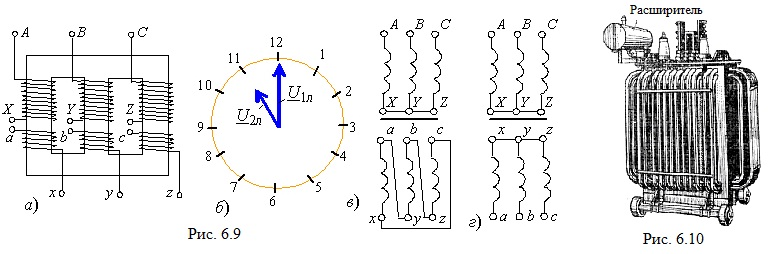
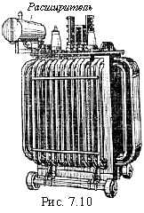

В трёхфазном трансформаторе на каждом стержне магнитопровода размещают по две обмотки: обмотку высшего напряжения и обмотку низшего напряжения (рис. 7.9, а). Выводы обмоток размечают в порядке чередования фаз: на стороне высшего напряжения выводы А, В, С - начало обмоток, Х, Y, Z - их концы; на стороне низшего напряжения - соответственно а, b, c и x, y, z. Обмотки трёхфазных трансформаторов соединяют по схеме звезда или треугольник. Эти соединения условно обозначают символами Y и Δ.

Кроме указания на схему соединений, указывается также группа соединений обмоток. Основанием для деления трансформаторов по группам соединений служит значение угла сдвига фаз между линейными высшим U1л и низшим U2л напряжениями. Обоснование групп соединений основано на сопоставлении относительного положения векторов высшего и низшего линейных напряжений в комплексной плоскости с положением минутной и часовой стрелок. Для сопоставления минутная стрелка считается установленной на цифре 12 и с ней совмещается вектор линейного высшего напряжения U1л, а часовая стрелка совмещается с вектором линейного низшего напряжения U2л. Группе соединений дают название по положению часовой стрелки.
 |
В случае однофазных трансформаторов возможны два положения: 0 (или 12) - одинаковое направление векторов U1л и U2л и 6 - противоположное их направление. У трёхфазных трансформаторов возможны все 12 различных групп соединений, но желательно иметь минимальное их число, учитывая, что трансформаторы, как правило, включаются на параллельную работу. Согласно действующему в Российской федерации ГОСТу для однофазных трансформаторов установлена одна группа соединений - 0, а для трёхфазных - две: 11 для соединений звезда/треугольник, т. е. Y/Δ-11 (рис. 7.9, б и в) и 12 для соединений звезда/звезда, т. е. Y/Y-12 (рис. 7.9, г). При соединении обмоток по схеме Y/Y отношение линейных напряжений равно фазному коэффициенту трансформации (U1л/U2л = n), при этом отношение линейных и фазных напряжений как обмотки высшего, так и низшего напряжений равно Uл/Uф = √3. При соединении обмоток понижающего трансформатора по схеме Y/Δ отношение U1л/U2л = √3n, а линейные напряжения обмоток низшего напряжения равны соответствующим фазным напряжениям, т. е. U2ф = U2л. |
Внешний вид трёхфазного масляного трансформатора с трубчатым баком представлен на рис. 7.10.